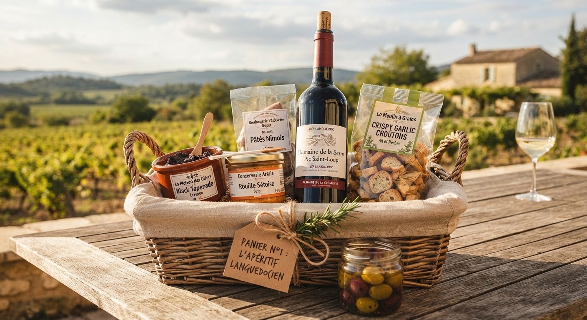
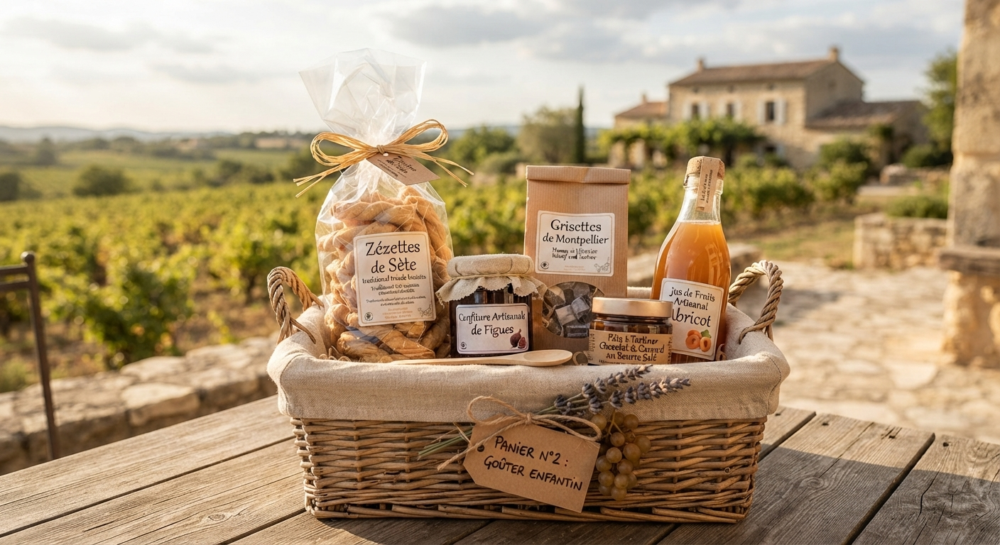
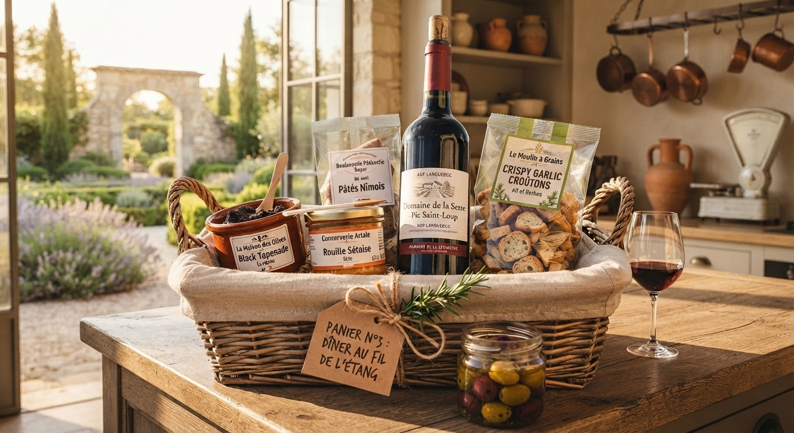
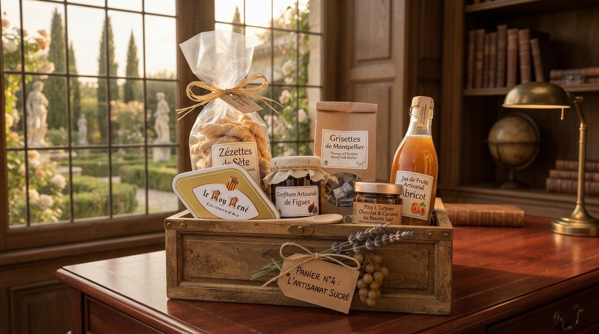
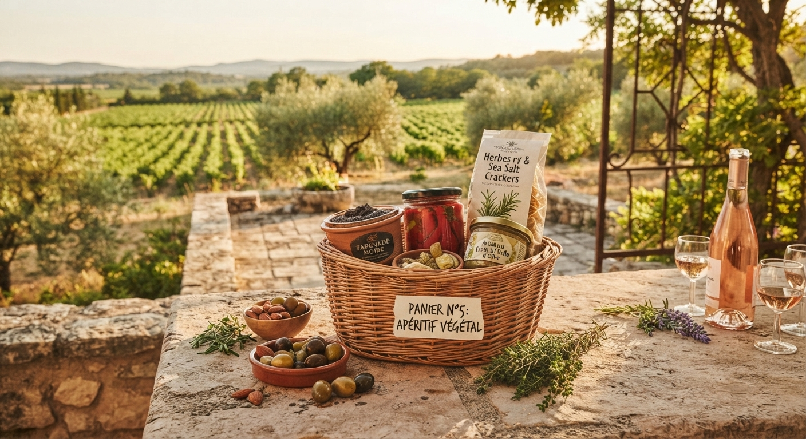
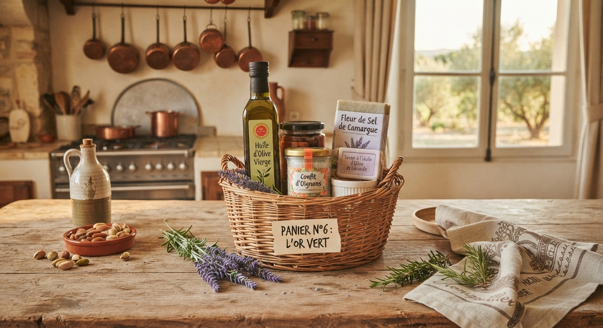
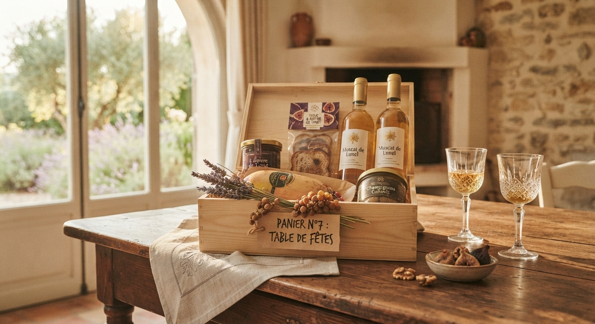
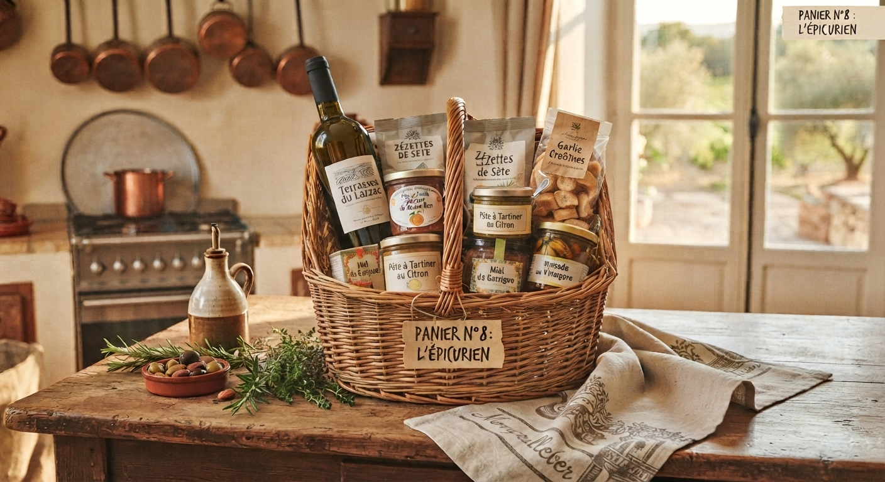

Découvrez notre sélection de coffrets élaborés à partir des meilleures spécialités artisanales du Languedoc. Chaque panier est soigneusement préparé auprès de producteurs locaux afin de vous faire vivre une véritable expérience gustative régionale.
✅ Produits artisanaux de qualité
✅ Sélectionnés auprès de producteurs et épiceries fines locales
✅ Coffrets prêts à offrir
✅ Livraison directement dans votre villa avant votre check-out

Un apéritif complet aux saveurs méditerranéennes. Parfait pour partager un moment convivial autour des spécialités emblématiques du Sud.

Une sélection gourmande idéale pour un goûter régional ou pour faire plaisir aux enfants.

Une immersion complète dans les traditions culinaires de Sète. Un panier conçu pour réaliser un authentique repas autour de la célèbre soupe de poissons de roche de la Méditerranée.

Un coffret cadeau qui rassemble les douceurs les plus emblématiques de Montpellier et de la région. Une excellente idée de souvenir gourmand.

Une sélection méditerranéenne 100 % végétale mettant à l'honneur les légumes du soleil et les saveurs authentiques du Languedoc.

Un coffret raffiné autour de deux trésors emblématiques de notre terroir : l'huile d'olive et le miel de garrigue.

Une sélection premium destinée aux amateurs d'épicerie fine et aux grandes occasions. L'élégance de la gastronomie du Sud.

Le panier découverte ultime. Une véritable invitation à explorer toutes les facettes de la gastronomie languedocienne au travers d'une sélection prestigieuse.